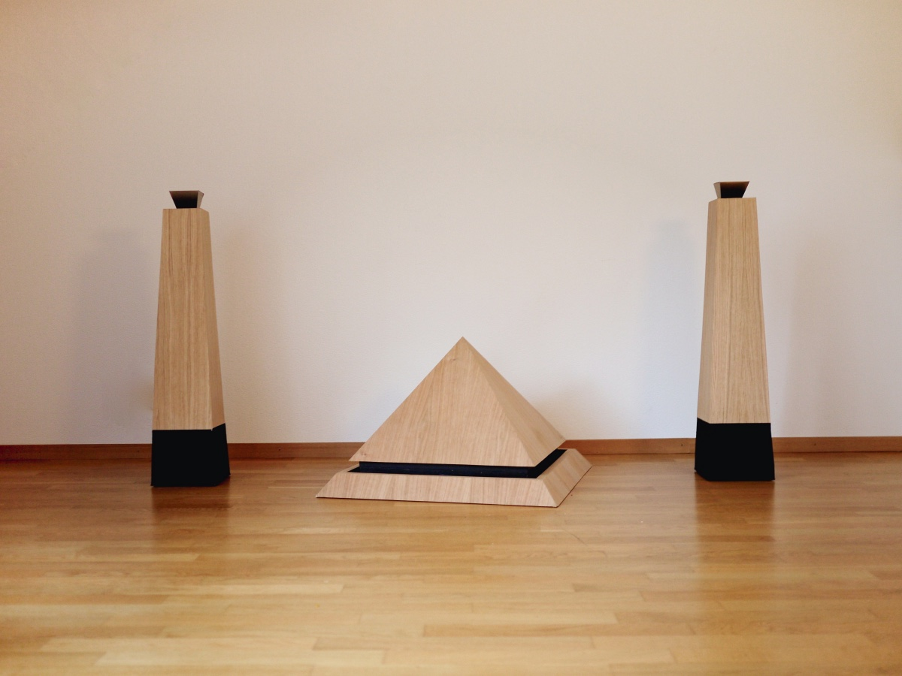
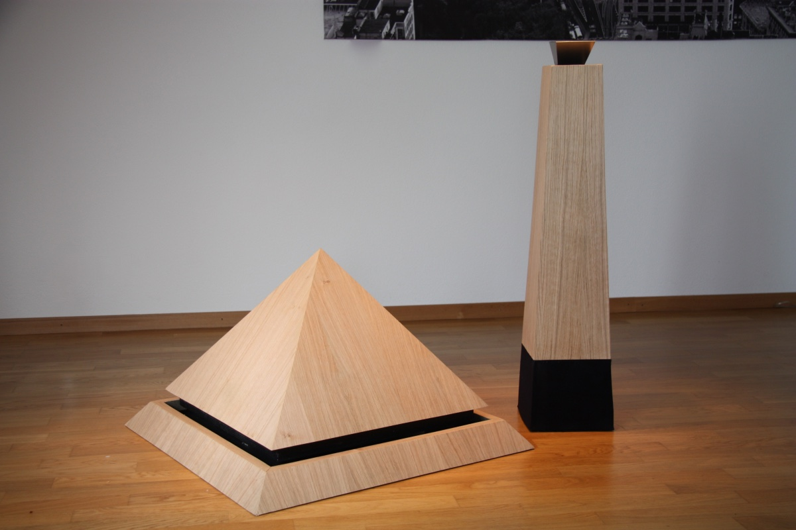
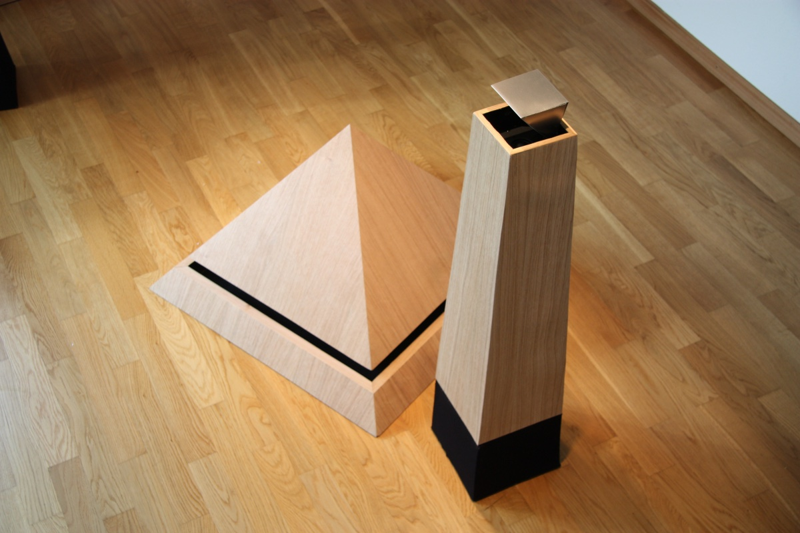
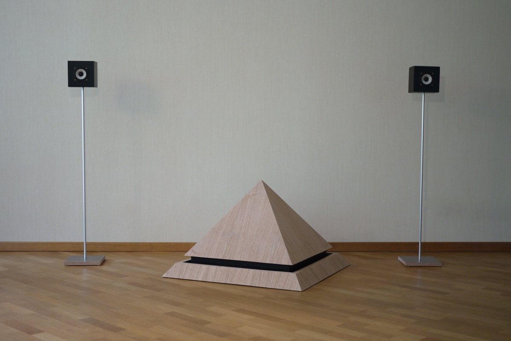

Pharaon

Pharaon is a 2.1 stereo speaker system. The goal of this project was to build something that would catch your eye and make you wonder about it's purpose, without compromising on sound quality.
The speakers are built out of plywood and MDF covered in oak.
The setup uses 7 membranes in total (1 subwoofer, 2 woofers, 2 mediums, 2 tweeters). The subwoofer is powered by a 150 Watt amplifier independently.
If you plan to get one of those, make sure to warn your neighbors beforehand!
(Audio material provided by HifiKit.se)